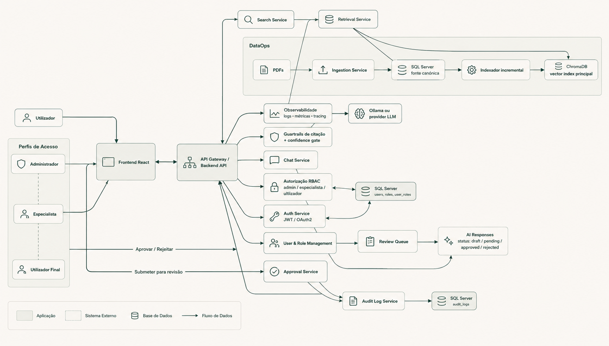

Centralize o mapeamento regulatório do MDR, AI Act e normas ISO/IEC. Automatize matrizes de rastreabilidade e acelere a geração de documentação técnica com validação humana assistida por LLM.
O crescimento de dispositivos médicos baseados em Inteligência Artificial trouxe novos desafios de conformidade regulatória. Os fabricantes necessitam de cumprir simultaneamente o MDR, o AI Act e várias normas ISO/IEC, o que gera sobreposição de obrigações, redundância documental e risco de inconsistências.
O BridgeMedAI propõe um ecossistema integrado que fornece mapeamento estruturado de requisitos e matrizes automáticas de rastreabilidade. Atua como um assistente inteligente que apoia (sem nunca substituir) a revisão e auditoria humana especializada.
Identificação automática de redundâncias e conflitos regulatórios entre MDR e o futuro EU AI Act.
Modelo dinâmico unificado conectando diretamente o Requisito Regulatório ➔ Evidência Técnica ➔ Documento.
Repositório inteligente contendo templates estruturados para GSPR, análise de risco e conformidade.
Uso avançado de modelos de linguagem para geração inicial de rascunhos de documentação técnica complexa.
Design focado em modularidade, segurança e isolamento de dados corporativos.

Uma síntese curta da proposta, do fluxo regulatório e do simulador demonstrado nesta página.
Clique nos passos abaixo para simular a análise regulatória de um Termómetro Inteligente com IA.
Três ganhos centrais para equipas clínicas, regulatórias e técnicas.
Centraliza o mapeamento entre MDR e AI Act, reduzindo análise manual e tornando a leitura regulatória muito mais rápida e consistente.
Liga requisitos, evidências e documentação técnica num fluxo único, facilitando auditorias, revisões internas e validação de consistência.
Gera apoio inteligente sem substituir o especialista, preservando o controlo clínico e regulatório sobre o resultado final.
Estudo aprofundado do MDR, AI Act e normas ISO/IEC aplicáveis. Identificação precisa de conflitos regulatórios.
Modelação da arquitetura e definição dos workflows de verificação com a criação de templates unificados.
Implementação do backend em FastAPI e integração do assistente inteligente com ChromaDB e LLM.
Execução ponta a ponta do framework utilizando o cenário real do dispositivo inteligente ThermoAI.
Execução de uma auditoria simulada rigorosa com base em checklists regulatórios reais da indústria.
Finalização da documentação técnica e elaboração do relatório final de projeto para a defesa na Universidade.